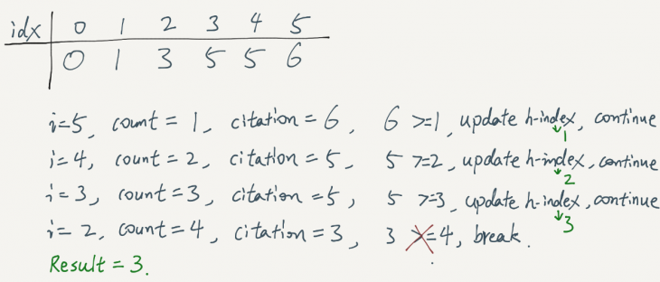

LeetCode Problem
274. H-Index
Link to LeetCode
Given an array of integers citations where citations[i] is the number of citations a researcher received for their ith paper, return the researcher's h-index.
According to the definition of h-index on Wikipedia: The h-index is defined as the maximum value of h such that the given researcher has published at least h papers that have each been cited at least h times.
Example 1:
Input: citations = [3,0,6,1,5]
Output: 3
Explanation: [3,0,6,1,5] means the researcher has 5 papers in total and each of them had received 3, 0, 6, 1, 5 citations respectively.
Since the researcher has 3 papers with at least 3 citations each and the remaining two with no more than 3 citations each, their h-index is 3.

Example 2:
Input: citations = [1,3,1]
Output: 1
public int hIndex(int[] citations) {
Arrays.sort(citations);
int result = 0;
for(int i=citations.length-1; i>=0; i--){
int cnt = citations.length-i;
if(citations[i]>=cnt){
result = cnt;
}else{
break;
}
}
return result;
}
// We can also put the citations in a counting sort array, then iterate over the counter array.
public int hIndex(int[] citations) {
int len = citations.length;
int[] counter = new int[len+1];
for(int c: citations){
counter[Math.min(len,c)]++;
}
int k=len;
for(int s=counter[len]; k > s; s += counter[k]){
k--;
}
return k;
}